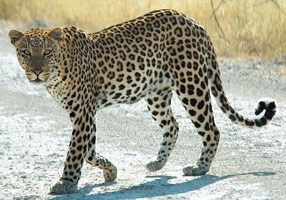
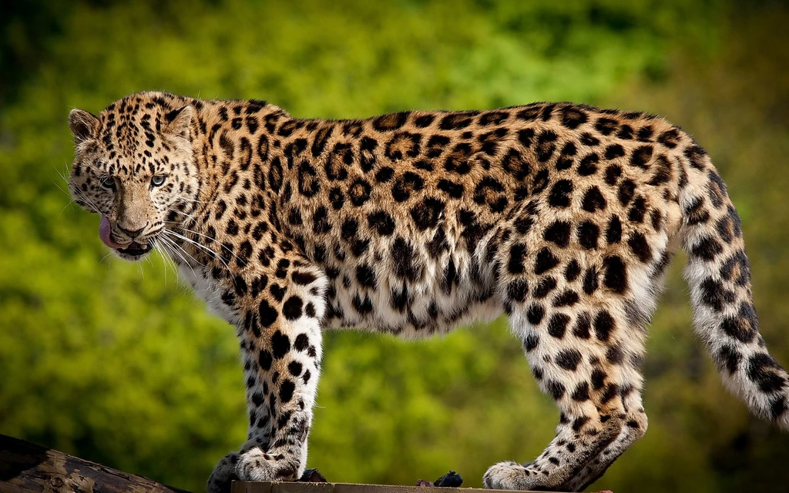

Леопард
Леопа́рд[5][6], или барс[7][8], или пантера[9] (лат. Panthera pardus) — вид хищных млекопитающих семейства кошачьих, один из пяти представителей рода пантера (лат. Panthera), относящегося к подсемейству больших кошек.
Крупная кошка, однако, по величине значительно меньше тигра и льва. Тело вытянутое, мускулистое, несколько сжатое с боков, лёгкое и стройное, очень гибкое, с длинным хвостом (его длина составляет больше половины всей длины тела). Лапы относительно короткие, но сильные. Передние лапы мощные и широкие. Голова относительно небольшая, округлая. Лоб выпуклый, лицевые части головы умеренно вытянуты. Уши небольшие, закруглённые, поставлены широко.
Глаза небольшие, зрачок круглый. Грива или удлинённые волосы в верхней части шеи и на щеках (баки) отсутствуют. Вибриссы представлены чёрными, белыми и наполовину чёрными наполовину белыми упругими волосами длиной до 110 мм.
Область распространения леопарда шире ареала любого другого представителя семейства кошачьих, за исключением домашней кошки. Пластичность вида объясняется скрытным образом жизни и его способностью охотиться на самых различных животных.
